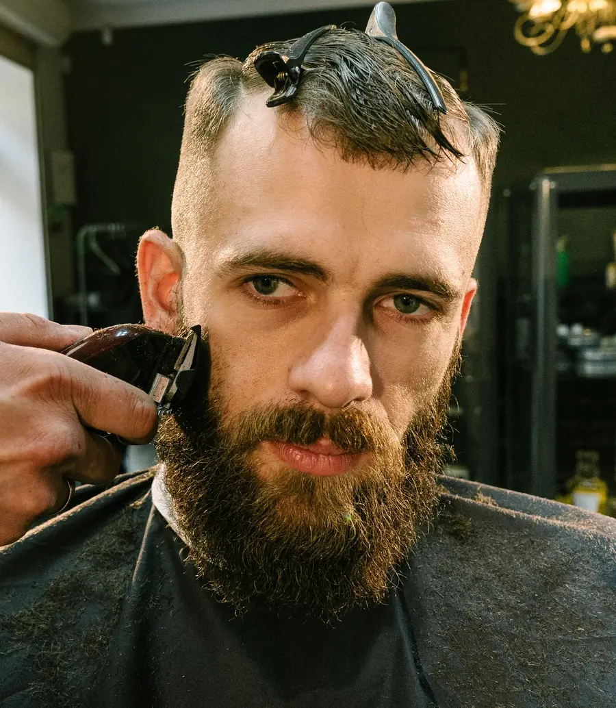
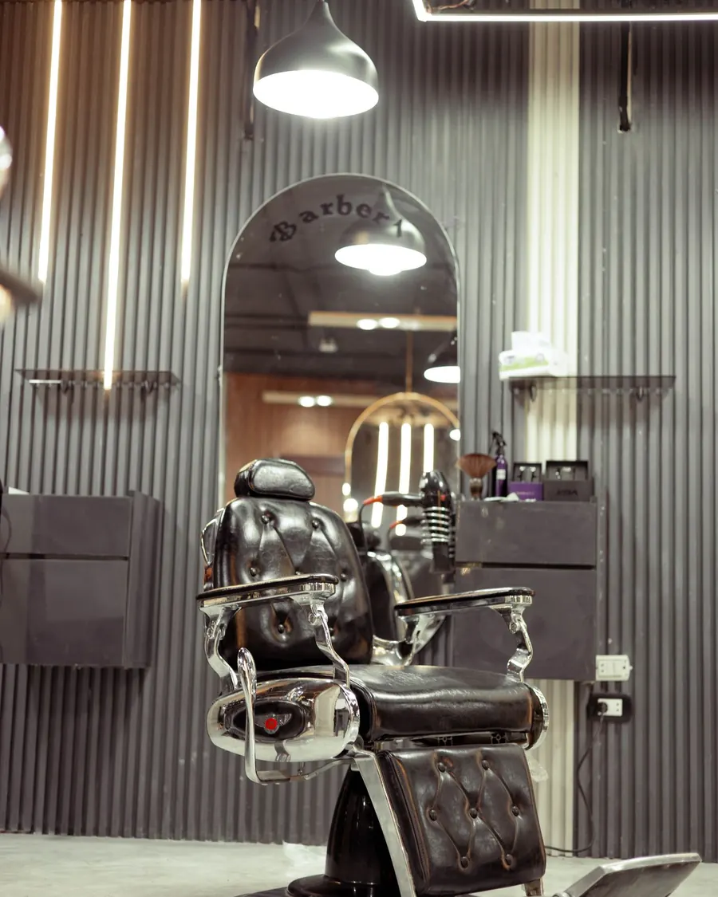
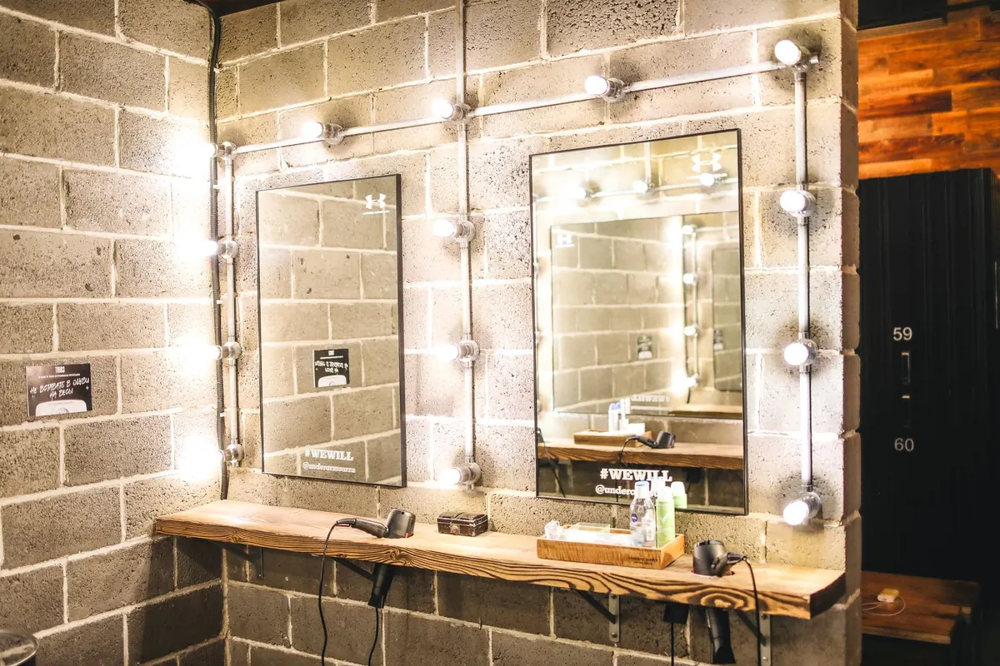
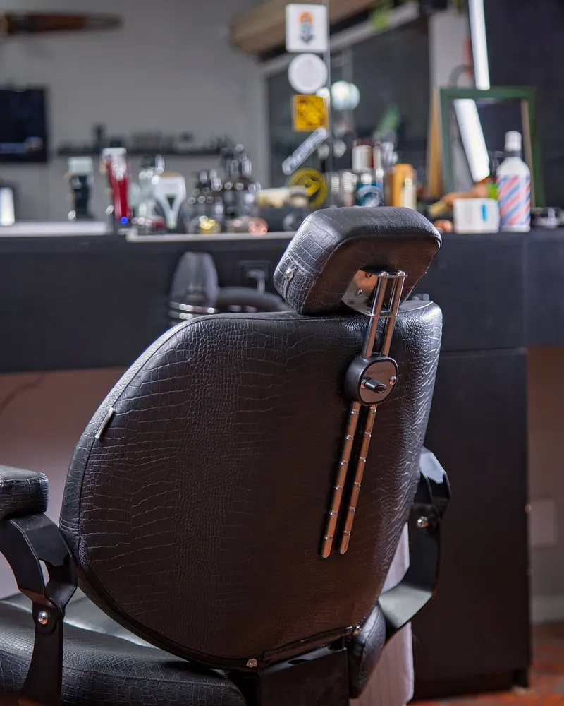

Barbearia Maya — Casimiro de Abreu, RJ
Mais que um corte. Uma experiência.
Seu estilo merece atenção aos detalhes. Conheça a Barbearia Maya e descubra uma experiência de cuidado, qualidade e personalidade.

Desde 2022
Tradição em cada detalhe.
A Barbearia Maya é um espaço dedicado ao cuidado masculino, onde cada atendimento é realizado com atenção, dedicação e profissionalismo.
Mais do que oferecer serviços de barbearia, buscamos proporcionar um ambiente agradável, onde cada cliente possa cuidar do visual e aproveitar uma experiência de qualidade.
- Atendimento profissional
- Atenção aos detalhes
- Ambiente acolhedor
Serviços
Do corte ao acabamento.
Valores sob consulta pelo WhatsApp.
Experiência Maya
Um espaço feito para você.
Um ambiente pensado para proporcionar conforto, cuidado e uma experiência agradável em cada visita.


- 01
Cuidado
Atenção aos detalhes em cada atendimento.
- 02
Estilo
Cortes e acabamentos que valorizam sua identidade.
- 03
Ambiente
Um espaço acolhedor para aproveitar seu momento.
Seu próximo corte começa aqui.
Reserve seu horário e venha conhecer a Barbearia Maya.
Agendar pelo WhatsApp(22) 99773-8422
Localização
Encontre a Barbearia Maya.
- Endereço
- Rua Pastor Luiz Laurentino da Silva, 816, Loja 05
Casimiro de Abreu, RJ - Funcionamento
- Segunda a sábado, das 08h às 19h30